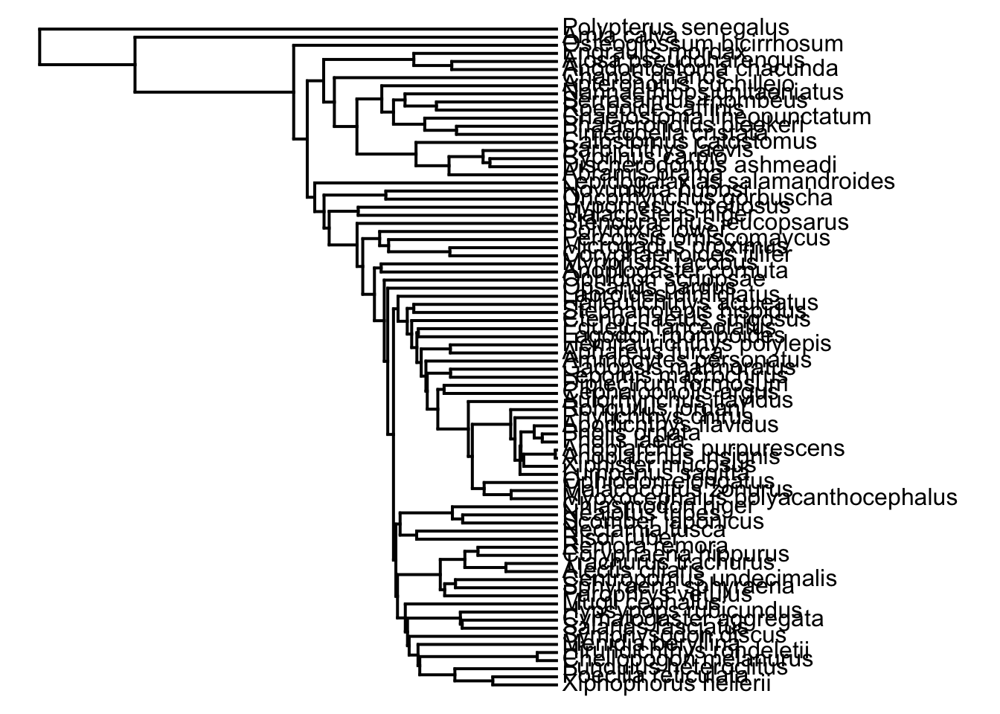
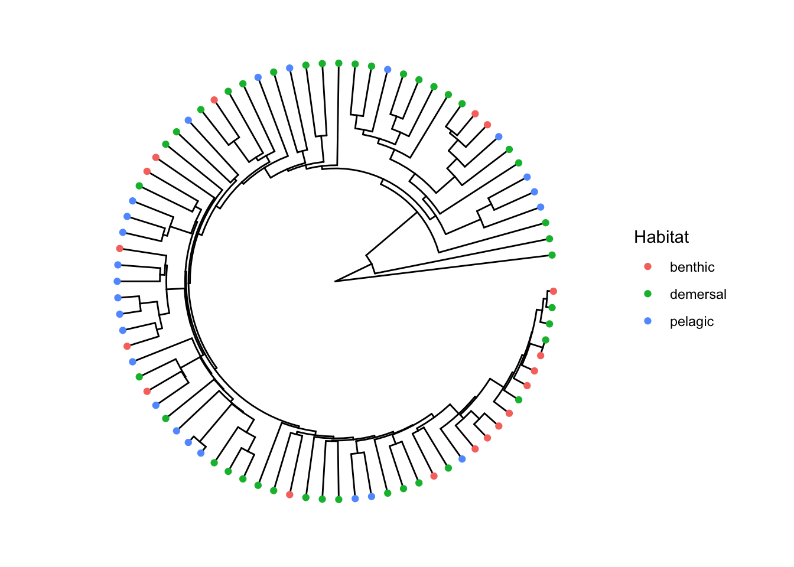

Last updated: 2022-10-23
Checks: 7 0
Knit directory: Code/
This reproducible R Markdown analysis was created with workflowr (version 1.7.0). The Checks tab describes the reproducibility checks that were applied when the results were created. The Past versions tab lists the development history.
Great! Since the R Markdown file has been committed to the Git repository, you know the exact version of the code that produced these results.
Great job! The global environment was empty. Objects defined in the global environment can affect the analysis in your R Markdown file in unknown ways. For reproduciblity it’s best to always run the code in an empty environment.
The command set.seed(20211230) was run prior to running
the code in the R Markdown file. Setting a seed ensures that any results
that rely on randomness, e.g. subsampling or permutations, are
reproducible.
Great job! Recording the operating system, R version, and package versions is critical for reproducibility.
Nice! There were no cached chunks for this analysis, so you can be confident that you successfully produced the results during this run.
Great job! Using relative paths to the files within your workflowr project makes it easier to run your code on other machines.
Great! You are using Git for version control. Tracking code development and connecting the code version to the results is critical for reproducibility.
The results in this page were generated with repository version bbb4c58. See the Past versions tab to see a history of the changes made to the R Markdown and HTML files.
Note that you need to be careful to ensure that all relevant files for
the analysis have been committed to Git prior to generating the results
(you can use wflow_publish or
wflow_git_commit). workflowr only checks the R Markdown
file, but you know if there are other scripts or data files that it
depends on. Below is the status of the Git repository when the results
were generated:
Ignored files:
Ignored: .DS_Store
Ignored: .Rhistory
Ignored: .Rproj.user/
Ignored: Flexibility Comparisons.nb.html
Ignored: Main.nb.html
Ignored: PGLS.FullData.nb.html
Ignored: PGLSforeachMeasFeature.nb.html
Ignored: PGLSwithPCA_Dims.nb.html
Ignored: PreppedVertMeas.nb.html
Ignored: ProcessCymatogasterFiles.nb.html
Ignored: ProcessFCSVfiles.nb.html
Ignored: TestingHabitatwithFriedmanData.nb.html
Ignored: Trilok_tree.nb.html
Ignored: VertLM.nb.html
Ignored: VertMeasLDA_Attempt.nb.html
Ignored: VertPGLS.nb.html
Ignored: VertPairs.nb.html
Ignored: analysis/.DS_Store
Ignored: analysis/.Rhistory
Ignored: analysis/02-CheckSpeciesMatch.nb.html
Ignored: analysis/10-VertLM.nb.html
Ignored: analysis/12-VertPGLS2.nb.html
Ignored: analysis/13-VertPGLS-MANOVA40.nb.html
Ignored: analysis/13-VertPGLS-MANOVA90.nb.html
Ignored: analysis/14-VertPGLS-MANOVA40.nb.html
Ignored: analysis/20-plot_phylogeny.nb.html
Ignored: analysis/21-plot_fits_and_summary.nb.html
Ignored: analysis/CheckSpeciesMatch.nb.html
Ignored: caper_test.nb.html
Ignored: data/.DS_Store
Ignored: ggtree_attempt.nb.html
Ignored: output/.DS_Store
Ignored: plot_example_data.nb.html
Ignored: plot_fits_and_summary.nb.html
Ignored: plot_phylogeny.nb.html
Ignored: summarize_vert_meas.nb.html
Ignored: test_phylogeny.nb.html
Ignored: test_vertebraspace.nb.html
Ignored: vert_evol.Rproj
Untracked files:
Untracked: Archive.zip
Untracked: Main.html
Untracked: ProcessFCSVfiles.Rmd
Untracked: VertPGLS.html
Untracked: analysis/13-VertPGLS-MANOVA90.Rmd
Untracked: analysis/14-VertPGLS-MANOVA40.Rmd
Untracked: data/actinopt_12k_raxml.tre.xz
Untracked: gg_saver.R
Untracked: output/BodyDistribution.pdf
Untracked: output/MasterVert_Measurements.csv
Untracked: output/anova_table.rtf
Untracked: output/anovatabs.csv
Untracked: output/effectsizes.csv
Untracked: output/fineness.pdf
Untracked: output/habitatvals.csv
Untracked: output/manova_table.rtf
Untracked: output/mean_d_alphaPos_CBL.pdf
Untracked: output/mean_params.pdf
Untracked: output/pair_plot.pdf
Untracked: output/phylogeny_families.pdf
Untracked: output/plot_example_data_figure.pdf
Untracked: output/predvals.Rds
Untracked: output/stats_table.rtf
Untracked: output/vertdata_show_species.csv
Untracked: output/vertdata_summary_species.csv
Untracked: output/vertshape.pdf
Untracked: plot_fits_and_summary.Rmd
Untracked: summarize_vert_meas.html
Untracked: testtree.csv
Untracked: vert_tree.csv
Unstaged changes:
Deleted: .Rprofile
Modified: analysis/index.Rmd
Modified: data/MasterVert_Measurements.csv
Modified: output/MasterVert_Measurements_Matched.csv
Modified: output/vert_tree.rds
Modified: output/vertdata_centered.csv
Modified: output/vertdata_summary.csv
Deleted: renv.lock
Deleted: renv/.gitignore
Deleted: renv/activate.R
Deleted: renv/settings.dcf
Note that any generated files, e.g. HTML, png, CSS, etc., are not included in this status report because it is ok for generated content to have uncommitted changes.
These are the previous versions of the repository in which changes were
made to the R Markdown (analysis/11-MergePhylogeny.Rmd) and
HTML (docs/11-MergePhylogeny.html) files. If you’ve
configured a remote Git repository (see ?wflow_git_remote),
click on the hyperlinks in the table below to view the files as they
were in that past version.
| File | Version | Author | Date | Message |
|---|---|---|---|---|
| Rmd | bbb4c58 | Eric Tytell | 2022-10-23 | Final analysis scripts |
| Rmd | 65e217e | Eric Tytell | 2022-09-16 | Updated code |
| Rmd | 23b4a3f | Eric Tytell | 2022-09-06 | Starting to compare a different phylogeny |
library(tidyverse)── Attaching packages ─────────────────────────────────────── tidyverse 1.3.2 ──
✔ ggplot2 3.3.6 ✔ purrr 0.3.4
✔ tibble 3.1.8 ✔ dplyr 1.0.9
✔ tidyr 1.2.0 ✔ stringr 1.4.1
✔ readr 2.1.2 ✔ forcats 0.5.2
── Conflicts ────────────────────────────────────────── tidyverse_conflicts() ──
✖ dplyr::filter() masks stats::filter()
✖ dplyr::lag() masks stats::lag()library(ggbeeswarm)
library(phytools)Loading required package: ape
Loading required package: maps
Attaching package: 'maps'
The following object is masked from 'package:purrr':
maplibrary(patchwork)
library(here)here() starts at /Users/etytel01/Documents/Vertebrae/Codelibrary(nlme)
Attaching package: 'nlme'
The following object is masked from 'package:dplyr':
collapselibrary(ape)
library(geiger)
library(ggtree)Warning: package 'ggtree' was built under R version 4.2.1ggtree v3.4.2 For help: https://yulab-smu.top/treedata-book/
If you use the ggtree package suite in published research, please cite
the appropriate paper(s):
Guangchuang Yu, David Smith, Huachen Zhu, Yi Guan, Tommy Tsan-Yuk Lam.
ggtree: an R package for visualization and annotation of phylogenetic
trees with their covariates and other associated data. Methods in
Ecology and Evolution. 2017, 8(1):28-36. doi:10.1111/2041-210X.12628
G Yu. Data Integration, Manipulation and Visualization of Phylogenetic
Trees (1st ed.). Chapman and Hall/CRC. 2022. ISBN: 9781032233574
LG Wang, TTY Lam, S Xu, Z Dai, L Zhou, T Feng, P Guo, CW Dunn, BR
Jones, T Bradley, H Zhu, Y Guan, Y Jiang, G Yu. treeio: an R package
for phylogenetic tree input and output with richly annotated and
associated data. Molecular Biology and Evolution. 2020, 37(2):599-603.
doi: 10.1093/molbev/msz240
Attaching package: 'ggtree'
The following object is masked from 'package:nlme':
collapse
The following object is masked from 'package:ape':
rotate
The following object is masked from 'package:tidyr':
expandlibrary(emmeans)
library(car)Loading required package: carData
Attaching package: 'car'
The following object is masked from 'package:dplyr':
recode
The following object is masked from 'package:purrr':
somelibrary(Hmisc)Loading required package: lattice
Loading required package: survival
Loading required package: Formula
Attaching package: 'Hmisc'
The following object is masked from 'package:ape':
zoom
The following objects are masked from 'package:dplyr':
src, summarize
The following objects are masked from 'package:base':
format.pval, unitscitation()
To cite R in publications use:
R Core Team (2022). R: A language and environment for statistical
computing. R Foundation for Statistical Computing, Vienna, Austria.
URL https://www.R-project.org/.
A BibTeX entry for LaTeX users is
@Manual{,
title = {R: A Language and Environment for Statistical Computing},
author = {{R Core Team}},
organization = {R Foundation for Statistical Computing},
address = {Vienna, Austria},
year = {2022},
url = {https://www.R-project.org/},
}
We have invested a lot of time and effort in creating R, please cite it
when using it for data analysis. See also 'citation("pkgname")' for
citing R packages.print(getRversion())[1] '4.2.0'citation("nlme")
To cite package 'nlme' in publications use:
Pinheiro J, Bates D, R Core Team (2022). _nlme: Linear and Nonlinear
Mixed Effects Models_. R package version 3.1-159,
<https://CRAN.R-project.org/package=nlme>.
Pinheiro JC, Bates DM (2000). _Mixed-Effects Models in S and S-PLUS_.
Springer, New York. doi:10.1007/b98882
<https://doi.org/10.1007/b98882>.
To see these entries in BibTeX format, use 'print(<citation>,
bibtex=TRUE)', 'toBibtex(.)', or set
'options(citation.bibtex.max=999)'.packageVersion("nlme")[1] '3.1.159'citation("ape")
To cite ape in a publication please use:
Paradis E. & Schliep K. 2019. ape 5.0: an environment for modern
phylogenetics and evolutionary analyses in R. Bioinformatics 35:
526-528.
A BibTeX entry for LaTeX users is
@Article{,
title = {ape 5.0: an environment for modern phylogenetics and evolutionary analyses in {R}},
author = {E. Paradis and K. Schliep},
journal = {Bioinformatics},
year = {2019},
volume = {35},
pages = {526-528},
}
As ape is evolving quickly, you may want to cite also its version
number (found with 'library(help = ape)' or 'packageVersion("ape")').packageVersion("ape")[1] '5.6.2'citation("geiger")
To cite medusa, auteur, or geiger in a publication use:
medusa
Alfaro Michael E, Francesco Santini, Chad Brock, Hugo Alamillo, Alex
Dornburg, Daniel L Rabosky, Giorgio Carnevale, and Luke J Harmon.
2009. Nine exceptional radiations plus high turnover explain species
diversity in jawed vertebrates. PNAS 106:13410-13414.
auteur
Eastman Jonathan M, Michael E Alfaro, Paul Joyce, Andrew L Hipp, and
Luke J Harmon. 2011. A novel comparative method for identifying
shifts in the rate of character evolution on trees. Evolution
65:3578-3589.
MECCA
Slater Graham J, Luke J Harmon, Daniel Wegmann, Paul Joyce, Liam J
Revell, and Michael E Alfaro. 2012. Fitting models of continuous
trait evolution to incompletely sampled comparative data using
approximate Bayesian computation. Evolution 66:752-762.
geiger-orig
Harmon Luke J, Jason T Weir, Chad D Brock, Richard E Glor, and
Wendell Challenger. 2008. GEIGER: investigating evolutionary
radiations. Bioinformatics 24:129-131.
geiger
Pennell Matthew W, Jonathan M Eastman, Graham J Slater, Joseph W
Brown, Josef C Uyeda, Richard G FitzJohn, Michael E Alfaro, and Luke
J Harmon. 2014. geiger v2.0: an expanded suite of methods for fitting
macroevolutionary models to phylogenetic trees. Bioinformatics
30:2216-2218.
To see these entries in BibTeX format, use 'print(<citation>,
bibtex=TRUE)', 'toBibtex(.)', or set
'options(citation.bibtex.max=999)'.packageVersion("geiger")[1] '2.0.10'vertdata_sum <- read_csv(here("output/vertdata_summary.csv")) |>
mutate(MatchSpecies = str_c(MatchGenus, MatchSpecies, sep = '_')) |>
select(-MatchGenus)Rows: 82 Columns: 46
── Column specification ────────────────────────────────────────────────────────
Delimiter: ","
chr (8): Species, Habitat, Water_Type, MatchSpecies, MatchGenus, alltaxon, ...
dbl (38): Indiv, fineness, CBL_med, CBL_max, CBL_mn, d_med, d_max, d_mn, alp...
ℹ Use `spec()` to retrieve the full column specification for this data.
ℹ Specify the column types or set `show_col_types = FALSE` to quiet this message.This is the tree from the Fish Tree of Life: https://fishtreeoflife.org/
tree <- read.tree(here('data/actinopt_12k_treePL.tre.xz'))Get the names of species from the tree.
allspecies <- tibble(tree$tip.label)
colnames(allspecies) <- c('Species')
head(allspecies)# A tibble: 6 × 1
Species
<chr>
1 Gambusia_marshi
2 Gambusia_panuco
3 Gambusia_regani
4 Gambusia_aurata
5 Gambusia_hurtadoi
6 Gambusia_gaigei Set up the tip number (just the row)
allspecies$Tip <- seq_len(nrow(allspecies))The double species name for Fundulus confuses things, so we’ll just correct it manually.
vertdata_sum <-
vertdata_sum |>
mutate(MatchSpecies = if_else(Species == 'Fundulus_heteroclitus',
'Fundulus_heteroclitus_heteroclitus',
MatchSpecies))vertdata <- left_join(vertdata_sum, allspecies,
by=c("MatchSpecies"="Species")) %>%
select(-(ends_with(".x") | ends_with(".y")))
vertdata# A tibble: 82 × 46
Species Indiv Habitat Water…¹ Match…² allta…³ Order Family finen…⁴ CBL_med
<chr> <dbl> <chr> <chr> <chr> <chr> <chr> <chr> <dbl> <dbl>
1 Abramis_b… 1 pelagic freshw… Alburn… Actino… Cypr… Cypri… 8.95 0.0166
2 Alectis_c… 1 pelagic marine Alecti… Actino… Cara… Caran… 8.75 0.0346
3 Alosa_pse… 1 pelagic anadro… Alosa_… Actino… Clup… Clupe… 7.39 0.0165
4 Amia_calva 1 demers… freshw… Amia_c… Actino… Amii… Amiid… 6.72 0.00983
5 Ammodytes… 1 demers… marine Ammody… Actino… Uran… Ammod… 16.9 0.0132
6 Anodontos… 1 pelagic freshw… Doroso… Actino… Clup… Clupe… 4.66 0.0228
7 Anoplarch… 1 benthic marine Anopla… Actino… Perc… Stich… 8.62 0.0195
8 Anoplarch… 1 demers… marine Anopla… Actino… Perc… Stich… 9.51 0.0156
9 Anoplogas… 1 pelagic marine Anoplo… Actino… Bery… Anopl… 5.04 0.0287
10 Aphareus_… 1 pelagic marine Aphare… Actino… Ince… Lutja… 5.01 0.0312
# … with 72 more rows, 36 more variables: CBL_max <dbl>, CBL_mn <dbl>,
# d_med <dbl>, d_max <dbl>, d_mn <dbl>, alphaAnt_med <dbl>,
# alphaAnt_max <dbl>, alphaAnt_mn <dbl>, alphaPos_med <dbl>,
# alphaPos_max <dbl>, alphaPos_mn <dbl>, DAnt_med <dbl>, DAnt_max <dbl>,
# DAnt_mn <dbl>, DPos_med <dbl>, DPos_max <dbl>, DPos_mn <dbl>,
# dBW_med <dbl>, dBW_max <dbl>, dBW_mn <dbl>, DAntBW_med <dbl>,
# DAntBW_max <dbl>, DAntBW_mn <dbl>, DPosBW_med <dbl>, DPosBW_max <dbl>, …Drop species without a match
vertdata %>%
filter(is.na(Tip)) %>%
distinct(Species, .keep_all=TRUE) %>%
select(Species, MatchSpecies, Tip, Habitat)# A tibble: 0 × 4
# … with 4 variables: Species <chr>, MatchSpecies <chr>, Tip <int>,
# Habitat <chr>vertdata <-
vertdata %>%
filter(!is.na(Tip))ourspecies <-
vertdata %>%
distinct(Species, .keep_all=TRUE)verttree <- keep.tip(tree, tip=as.vector(ourspecies$Tip))Replace the names of species in the tree with our matched ones.
verttree$tip.label <-
ourspecies |>
arrange(Tip) |>
pull(Species)plotTree(verttree)
vertdata_sp <-
vertdata %>%
distinct(Species, .keep_all = TRUE) %>%
mutate(rowname = Species) %>%
column_to_rownames(var = "rowname")left_join(as_tibble(verttree),
vertdata_sp %>%
rownames_to_column("label") %>%
select(label, Habitat)) %>%
tidytree::as.treedata() %>%
ggtree(layout = 'circular') + # geom_tiplab() +
geom_tippoint(aes(color = Habitat))Joining, by = "label" Check if tree and data match
length(verttree$tip.label)[1] 82nrow(vertdata_sp)[1] 82name.check(verttree, vertdata_sp)[1] "OK"Merge the measurements and the tree
verttree_data <-
as_tibble(verttree) %>%
left_join(vertdata_sp %>%
rownames_to_column("label") %>%
select(label, Habitat, alltaxon, Order, Family, fineness,
ends_with("80"), ends_with("max"), ends_with("med"), ends_with("slope"), ends_with("quad")))Joining, by = "label"Save out the tree data. There is something subtly different about saving the data out as a csv file and saving it as an RDS file. The base class of the tree is tbl_tree, but when we load it back in from a csv, despite having exactly the same data, it won’t work with the tidytree functions. So we save it in an RDS file, which preserves the class.
write_csv(vertdata_sp, here('output/vertdata_summary_species.csv'))
saveRDS(verttree, here('output/vert_tree.rds'))
sessionInfo()R version 4.2.0 (2022-04-22)
Platform: x86_64-apple-darwin17.0 (64-bit)
Running under: macOS Big Sur/Monterey 10.16
Matrix products: default
BLAS: /Library/Frameworks/R.framework/Versions/4.2/Resources/lib/libRblas.0.dylib
LAPACK: /Library/Frameworks/R.framework/Versions/4.2/Resources/lib/libRlapack.dylib
locale:
[1] en_US.UTF-8/en_US.UTF-8/en_US.UTF-8/C/en_US.UTF-8/en_US.UTF-8
attached base packages:
[1] stats graphics grDevices utils datasets methods base
other attached packages:
[1] Hmisc_4.7-1 Formula_1.2-4 survival_3.3-1 lattice_0.20-45
[5] car_3.1-0 carData_3.0-5 emmeans_1.8.0 ggtree_3.4.2
[9] geiger_2.0.10 nlme_3.1-159 here_1.0.1 patchwork_1.1.2
[13] phytools_1.2-0 maps_3.4.0 ape_5.6-2 ggbeeswarm_0.6.0
[17] forcats_0.5.2 stringr_1.4.1 dplyr_1.0.9 purrr_0.3.4
[21] readr_2.1.2 tidyr_1.2.0 tibble_3.1.8 ggplot2_3.3.6
[25] tidyverse_1.3.2
loaded via a namespace (and not attached):
[1] readxl_1.4.1 backports_1.4.1 fastmatch_1.1-3
[4] workflowr_1.7.0 igraph_1.3.4 lazyeval_0.2.2
[7] splines_4.2.0 digest_0.6.29 yulab.utils_0.0.5
[10] htmltools_0.5.3 fansi_1.0.3 checkmate_2.1.0
[13] magrittr_2.0.3 optimParallel_1.0-2 googlesheets4_1.0.1
[16] cluster_2.1.3 tzdb_0.3.0 modelr_0.1.9
[19] vroom_1.5.7 jpeg_0.1-9 colorspace_2.0-3
[22] rvest_1.0.3 haven_2.5.1 xfun_0.32
[25] crayon_1.5.1 jsonlite_1.8.0 phangorn_2.9.0
[28] glue_1.6.2 gtable_0.3.1 gargle_1.2.0
[31] abind_1.4-5 scales_1.2.1 mvtnorm_1.1-3
[34] DBI_1.1.3 Rcpp_1.0.9 plotrix_3.8-2
[37] htmlTable_2.4.1 xtable_1.8-4 gridGraphics_0.5-1
[40] tidytree_0.4.0 bit_4.0.4 foreign_0.8-82
[43] subplex_1.8 deSolve_1.33 htmlwidgets_1.5.4
[46] httr_1.4.4 RColorBrewer_1.1-3 ellipsis_0.3.2
[49] farver_2.1.1 pkgconfig_2.0.3 nnet_7.3-17
[52] sass_0.4.2 dbplyr_2.2.1 deldir_1.0-6
[55] utf8_1.2.2 labeling_0.4.2 ggplotify_0.1.0
[58] tidyselect_1.1.2 rlang_1.0.4 later_1.3.0
[61] munsell_0.5.0 cellranger_1.1.0 tools_4.2.0
[64] cachem_1.0.6 cli_3.3.0 generics_0.1.3
[67] broom_1.0.1 evaluate_0.16 fastmap_1.1.0
[70] yaml_2.3.5 bit64_4.0.5 knitr_1.40
[73] fs_1.5.2 whisker_0.4 aplot_0.1.6
[76] xml2_1.3.3 compiler_4.2.0 rstudioapi_0.14
[79] beeswarm_0.4.0 png_0.1-7 reprex_2.0.2
[82] treeio_1.20.2 clusterGeneration_1.3.7 bslib_0.4.0
[85] stringi_1.7.8 highr_0.9 Matrix_1.4-1
[88] vctrs_0.4.1 pillar_1.8.1 lifecycle_1.0.1
[91] combinat_0.0-8 jquerylib_0.1.4 estimability_1.4.1
[94] data.table_1.14.2 httpuv_1.6.5 R6_2.5.1
[97] latticeExtra_0.6-30 promises_1.2.0.1 gridExtra_2.3
[100] vipor_0.4.5 codetools_0.2-18 MASS_7.3-56
[103] assertthat_0.2.1 rprojroot_2.0.3 withr_2.5.0
[106] mnormt_2.1.0 expm_0.999-6 parallel_4.2.0
[109] hms_1.1.2 rpart_4.1.16 quadprog_1.5-8
[112] grid_4.2.0 ggfun_0.0.7 coda_0.19-4
[115] rmarkdown_2.16 googledrive_2.0.0 git2r_0.30.1
[118] numDeriv_2016.8-1.1 scatterplot3d_0.3-41 lubridate_1.8.0
[121] base64enc_0.1-3 interp_1.1-3